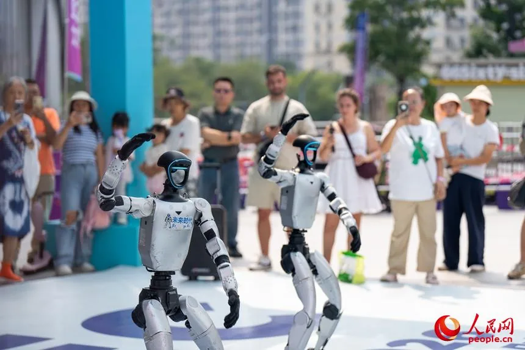

유니트리, APEC 2026 심천: 무대의 창업자, 거리의 로봇, 그리고 서비스 계약 없음
심천은 일주일 동안 아시아태평양에 로봇을 보여줬다. 유니트리는 창업자와 퍼포먼스를 내놨다. 정작 서밋에서 커피를 내리고 맥주를 따르고 손님을 맞은 로봇은 다른 회사 것들이었다. 이 분리가 어떤 키노트보다 중국 휴머노이드의 상업적 위치를 잘 보여준다.

유니트리의 APEC 주간은 두 갈래였다. 11월 17일 왕싱싱은 첸하이 CEO 서밋 무대에서 “보이는 진전은 수면 위일 뿐”이라고 말했다. 20km 떨어진 룽강에서는 G1이 외신 기자들 앞에서 취권을 선보였다. 둘 다 실제 배치는 아니었다. 서밋에서 커피와 아이스크림, 맥주를 만든 로봇은 Zhipingfang, Zibianliang, UBTech 등 다른 회사 제품이었다. 상장 후 첫 분기 실적은 매출 +70%, 순이익 -17%, 연구개발비 3배를 보여준다. APEC은 이미 갖고 있던 주목을 한 번 더 줬을 뿐, 다음 단계에 필요한 서비스 계약은 주지 않았다.
심천이 아시아태평양을 일주일간 붙잡았다. 제33차 APEC 경제지도자회의는 11월 18~19일, CEO 서밋은 11월 17~18일 첸하이 국제컨벤션센터에서 열렸고 2,000여 명의 정·재계 대표와 포춘 글로벌 500대 기업 115곳이 참석했다. 도시는 이 창을 자기 방식으로 썼다. 컨벤션홀 전시가 아니라 로봇을 거리와 뉴스센터, 공원, 매장에 풀어놓고 방문 기자들이 찍게 했다.
유니트리도 그 안에 있었다. 대형 지역 행사에 잘 알려진 브랜드가 보통 그렇듯 — 눈에 띄고, 사진이 잘 나오고, 실제 작업과는 한 걸음 떨어져서. 창업자는 말했다. 로봇은 공연했다. 운영 역할은 다른 곳으로 갔다.
무대: 왕싱싱의 세 가지 인정
왕싱싱은 11월 17일 “개방적이고 포용적인 AI 혁신 생태계 구축” 토론에 바이두의 리옌훙과 함께 섰다. 절강일보는 그가 유일하게 흰 운동화를 신고 올라온 연사였다고 전했다. 신발보다 내용이 더 흥미로웠다.
핵심 이미지는 수직이다. 일반인이 보는 AI와 로봇의 진전은 수면 위 부분이고, 수면 아래는 “더 격동적”이며 대중 인식보다 빠르다고 했다. 창업자의 낙관이지만, 키노트에서 드문 두 가지 단서를 붙였다.
첫째는 기술이다. 모델 일반화 — 하나의 정책을 여러 과제와 환경으로 옮기는 능력 — 이 가장 큰 제약이며 곧 돌파구에 가깝다고 봤다. 10월 자체 생태계 콘퍼런스에서 GPT-6가 사전학습과 계획 파이프라인 없이 G1을 조종해 그림을 그리고 붓을 씻는 시연을 한 것과 같은 맥락이다. 데모로는 인상적이고, 제품으로는 아직 아니다.
둘째는 산업이다. 수요가 수만 대에서 수백만·수천만 대로 뛰면 압력은 제조 신뢰성과 애프터서비스로 옮겨간다고 했다. 이 문장이 핵심이다. 해외 유통사들이 중국 휴머노이드에 대해 하는 불만과 같다. 기기는 도착하고 데모는 되지만, 9주째 관절 모듈이 고장 나면 현지 기술자도, 6주짜리 부품 주기도 없다.
그는 또 국제 무대에서 중국 경영진이 좀처럼 말하지 않는 것도 인정했다. 중국은 제조에 강하지만 첨단 AI 모델, 컴퓨팅, 최상위 인재에서는 여전히 약하다는 것이다. 그래서 나온 것이 협력론 — 점유율 싸움보다 시장을 키우자 — 이고, 10월 생태계 콘퍼런스 파트너의 3분의 1 이상이 해외였다는 언급이다.
일관된 논리다. 다만 구매 담당자가 아닌 잠재 파트너와 고객을 향한 논리다.
거리: G1이 실제로 존재감을 낸 곳
공연은 룽강 로봇거리, 세계 최초 로봇 6S 매장 주변에서 열렸다. 4층짜리 판매·체험 건물로 유니트리, EngineAI, LimX Dynamics 등의 로봇을 판매·임대·수리·맞춤 제작한다. 11월 16일 APEC 외신 투어 첫 차수가 도착했고, 독일 기자는 Southern+에 특정 동작보다 보행 능력이 인상적이었으며 독일에는 보여줄 휴머노이드가 훨씬 적다고 말했다.
카메라가 담은 것은 쇼였다. 이데일리 특파원은 11월 13일 매장 앞에서 유니트리 G1이 취권을 선보이는 것을 봤다 — 비틀거리며 팔을 휘두르고, 쓰러질 듯하다가 공중으로 발차기를 날렸다. 같은 자리에서 EngineAI T800은 점프 어퍼컷을 포함한 복싱 동작을 했다. 투어 중 유니트리 휴머노이드들이 단체로 무술을 선보였다고 지엠면도 전했다. 관중은 휴대폰을 든 채 빽빽했다.
유동인구가 매장이 이 쇼를 하는 이유다. 매장 매니저는 Southern+에 서밋 전 일주일 동안 하루 약 1,000명의 외국인 방문객이 왔고 전체의 45%를 넘었다며, 단체는 베트남·싱가포르·말레이시아에서 왔다고 했다. 폰 카메라 앞에서 포즈를 유지하는 로봇은 그 공간에서 판매 도구다. 같은 건물에 로봇 식당, 복싱 링, 드론 조종 시연이 있다.
한 가지는 기록을 위해 분명히 해야 한다. 11월 17일 룽강에서 한 시간 동안 춤을 춰 기네스 세계기록을 세운 151대의 휴머노이드는 6S 매장 운영사 미래시대로봇(Future Era Robotics)이 주최했고, 유니트리가 아니다. 이 기록은 심천의 군집 제어와 하드웨어 안정성에 대한 실제 신호다. 유니트리의 이정표는 아니며, 일부 해외 게시물이 둘을 섞었다.
누가 실제로 근무했나
APEC 기계 안에서 반복 노동을 한 로봇은 다른 명단이었다. 지도자회의 주간 뉴스센터에서는 Zhipingfang의 “아이바오” 휴머노이드 7대가 커피와 아이스크림, 주스를 만들었다. 회사에 따르면 7대가 시간당 커피 45잔, 아이스크림 30개, 주스 30잔을 처리한다. 휴게 공간에서는 Zibianliang의 “예짜이”가 간식과 물을 건네고 쓰레기를 받았다. UBTech의 Walker C1은 첸하이 ‘베이 환영홀’에서 손님을 맞았다. 콰이웨이의 “샤오웨이”는 첸하이 스톤파크에서 맥주와 밀크티를 따랐고, 메이퇀은 배송 드론과 “리틀 옐로 비” 로봇을 투입했다.
모두 언론 보도된 배치이고 감사된 계약은 아니며, 일부는 서비스 옷을 입은 시연 협약이다. 그래도 패턴은 보인다. 운영 슬롯을 받은 회사들은 운동 능력이 아니라 서비스 노동을 팔았다. 유니트리 G1은 127cm 키에 연구·공연용 플랫폼이고, 연구실과 행사 기획자에게 매력적인 가격이다. 2,000명 대표에게 커피를 서빙하도록 설계된 로봇이 아니다.
| 기업 | APEC 주간 역할 | 장소 | 성격 |
|---|---|---|---|
| 유니트리 | 창업자 패널, G1 무술 공연 | CEO 서밋(첸하이), 로봇거리(룽강) | 브랜드·데모 |
| Zhipingfang | “아이바오” 7대가 커피·아이스크림·주스 | 뉴스센터 | 대규모 서비스 데모 |
| Zibianliang | “예짜이”가 간식·물·쓰레기 처리 | 뉴스센터 휴게 공간 | 서비스 데모 |
| UBTech | Walker C1이 손님 영접 | 첸하이 베이 환영홀 | 프런트 데모 |
| 콰이웨이 | “샤오웨이”가 맥주·밀크티 | 첸하이 스톤파크 | 리테일 데모 |
| 미래시대로봇 | 151대 기네스 기록 | 룽강 로봇거리 | 군집 퍼포먼스 |
출처: 중국신문사, 지엠면, CCTV, Southern+, 회사 발표(2026년 11월). ‘성격’은 편집 분류이며 계약 설명이 아니다.
무대 아래의 숫자
유니트리는 2026년 8월 19일 상하이증권거래소 STAR 마켓에 상장했다. 공모가 150.80위안, 조달액 약 61억 위안, 공모가 기준 주가수익비율 219배였다. 주가는 1,100위안 위로 열렸고 시가총액 4,400억 위안을 넘었다가 60% 이상 하락했고 10월 말 반등했다. 왕싱싱 패널 당일인 11월 17일 종가는 639.94위안, 시가총액 약 2,581억 위안이었다(난방도시보).
더 쓸모 있는 문서는 10월 28일 상장 후 첫 분기보고서다. 3분기 매출 6억 6,500만 위안(+69.9%), 지배주주 순이익 1억 1,270만 위안(-17.4%), 연구개발비 1억 2,700만 위안(+249.6%, 매출의 19.1%). 1~9월 매출 18억 1,700만 위안(+55.7%), 순이익 3억 8,670만 위안(+270.5%)이지만 조정 순이익은 18.8% 줄고 영업현금흐름은 54.7% 줄었다.
숫자를 같이 읽으면 전략이 보인다. 유니트리는 아직 없다고 인정한 모델 스택을 쌓는 데 돈을 쓰면서, 하드웨어 성장으로 그것을 뒷받침한다. 회사의 이야기는 더 이상 “싼 사족보행 로봇, 멋진 영상”이 아니라 “제조 기반의 임바디드 AI 플랫폼”이다. 증명하기 어려운 이야기이고, 창업자가 APEC에서 오전 한나절을 백플립 대신 모델 일반화 설명에 쓴 이유다.
해외 구매자에게 이 격차가 중요한 이유
유럽 유통사나 미국 연구실에 APEC 주간은 유용한 신호지만 결정적이지 않다. 보여주는 것은 유니트리에 브랜드 허가가 있다는 점 — 정부와 방송이 기꺼이 기계를 화면에 올린다 — 그리고 CEO가 데모 이후의 문제, 즉 신뢰성·서비스·부품을 생각하고 있다는 점이다.
보여주지 않는 것은 그 문제가 해결됐는지다. 독일로 팔린 G1에는 CE 인증, 서비스 파트너, 매번 선전을 거치지 않는 부품 경로가 필요하다. 회사 숫자는 쉬운 성장기가 끝나고 있음을 말한다. 2026년 초 세 자릿수 성장률은 3분기 약 70%로 둔화했고, 연구개발비가 늘면서 조정 이익은 줄고 있다. 다음 구간은 중국 밖에서 더 좋은 마진으로 더 많이 파는 것, 돈이 드는 서비스 층을 짓는 것에 달려 있다.
왕싱싱의 “수백만 대” 발언도 이 맥락이다. 예측이 아니라, 병목이 운동 제어에서 물류로 옮겨갔다는 선언이다.
APEC이 증명한 것과 증명하지 못한 것
심천이 설득력 있는 기술 주간을 열 수 있다는 것은 증명했다. 외신은 걷고 싸우고 춤추는 로봇 영상과 하드웨어 중심으로 재편된 도시 이야기를 갖고 떠났다. 중국 로봇 기업들이 주최자 없이도 도시 전체 쇼를 함께 채울 수 있다는 것도 증명했다.
유니트리나 다른 누구에게 서비스 사업이 있다는 것은 증명하지 못했다. 운영 데모는 작고, 감독됐고, 짧았다. 151대 기록은 군집 조율 성과이지 매출 서비스 중인 플릿이 아니다. 서밋의 조달, 있다면 커피머신과 리셉션 데스크에 갔다.
유니트리에 대한 비판은 아니다. 업계의 현재 위치다. 유능한 하드웨어, 개선되는 모델, 그리고 여전히 대부분 시연하려는 사람에게 기계를 파는 사업모델. 서비스 계약으로 넘어간 회사가 다음 APEC에서는 올해 커피를 내린 회사처럼 보일 것이다.
지켜볼 것
- 해외 매출 공시. 증권신고서와 분기보고서의 내수·수출 구분, 수출 비중과 마진이 APEC 주목이 전환되는지 보는 가장 깨끗한 시험이다.
- 인증 진전. G1과 H2의 CE·FCC 승인이 어느 시장을 열지 결정한다. 미국 쪽은 커버드 리스트와 232조 관세 절차가 여전히 제약이다.
- 서비스 거점. 유럽이나 걸프에 관절 모듈을 현지 비축한 서비스 허브가 생기면 애프터서비스 경고가 반복이 아니라 대응으로 바뀌었다는 신호다.
- 모델 비용 대 하드웨어 마진. 매출의 19% 연구개발은 선택이다. 조정 이익이 줄어드는 동안 계속 오르면 시장은 모델이 언제 제품이 되는지 묻기 시작한다.
- 다음 국제 무대. 유니트리가 다시 공연 초청을 받는지, 아니면 실제 운영을 맡는지가 구매자들의 시선을 보여준다.
자주 묻는 질문
유니트리 로봇이 APEC 2026에 나왔나?
나왔다. 단 지도자회의장은 아니었다. 왕싱싱은 11월 17일 CEO 서밋에서 발언했고, 같은 주 룽강 로봇거리에서 G1이 외신과 방문객 앞에 무술을 선보였다. 서밋장 내부 서비스 역할을 맡았다는 보도는 없었다.
151대 기네스 기록은 유니트리 것인가?
아니다. 미래시대로봇이 11월 17일 시도했고 기네스 세계기록이 한 시간 내 151대 휴머노이드 춤을 인증했다. 유니트리 기계가 같은 구역에 있었지만 기록은 회사에 귀속되지 않는다.
왕싱싱은 중국의 약점에 대해 뭐라고 했나?
중국은 제조 우위가 있지만 첨단 AI 모델, 컴퓨팅, 최상위 인재에서는 여전히 약하다고 했다. 그래서 점유율 싸움보다 협력이 합리적 전략이며 생태계 파트너의 3분의 1 이상이 해외라고 덧붙였다.
APEC 주목이 주문으로 이어지나?
직접적으로는 아니다. APEC은 정치·경제 서밋이지 조달 박람회가 아니다. 단기 증거는 수출 매출, 인증, 서비스 역량이며 이는 무대가 아니라 공시와 채널 확인에서 나온다.
출처
- 중앙인민방송망 — 유니트리·AgiBot·AUTOLIFE·EngineAI APEC 합동 전시, 2026-11-18
- 난방도시보 — 왕싱싱 발언, 유니트리 상장·주가, 2026-11-17
- 절강일보 — 항저우 6룡 APEC: 세계 휴머노이드 점유율 31%, 국산 공급망 90%, 2026-11-17
- 중국청년보 — 왕싱싱 “협력이 주된 흐름”, 해외 파트너 1/3 이상, 2026-11-17
- 지엠몐 — APEC에 출근한 중국 기술기업들: Zhipingfang·Zibianliang·UBTech·콰이웨이·유니트리 공연, 2026-11-19
- 중국신문망 — APEC에서 “출근”한 로봇의 하루, 2026-11-17
- 난팡+ — 외신, 룽강 로봇거리 방문; 하루 외국인 1,000명, 2026-11-17
- 이데일리 — 선전 로봇거리에서 취권 추는 유니트리 G1, 2026-11-19
- 중국신문망 — 룽강 151대 로봇 기네스 기록, 2026-11-17
- 유니트리테크 — 2026년 3분기 보고서, 2026-10-28